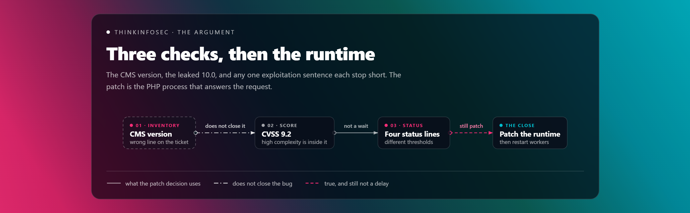
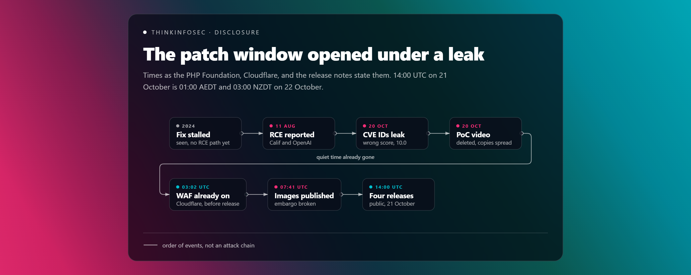
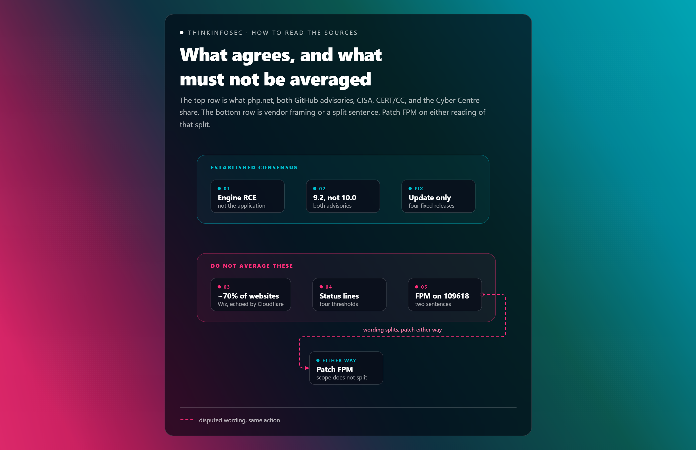
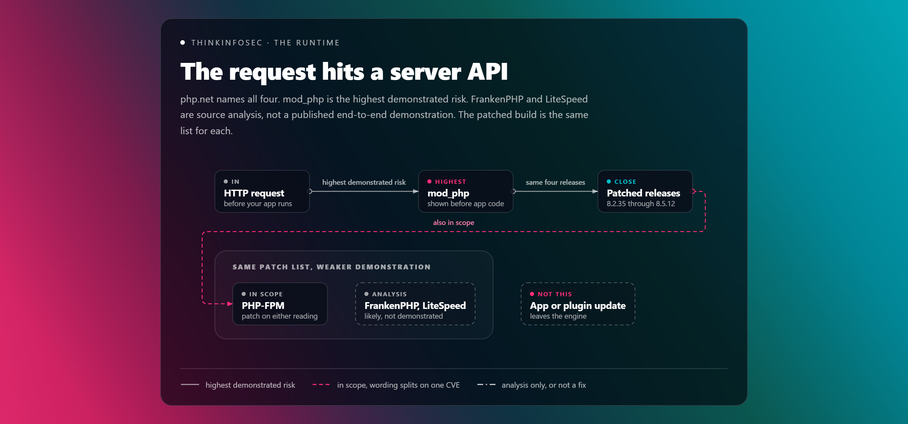
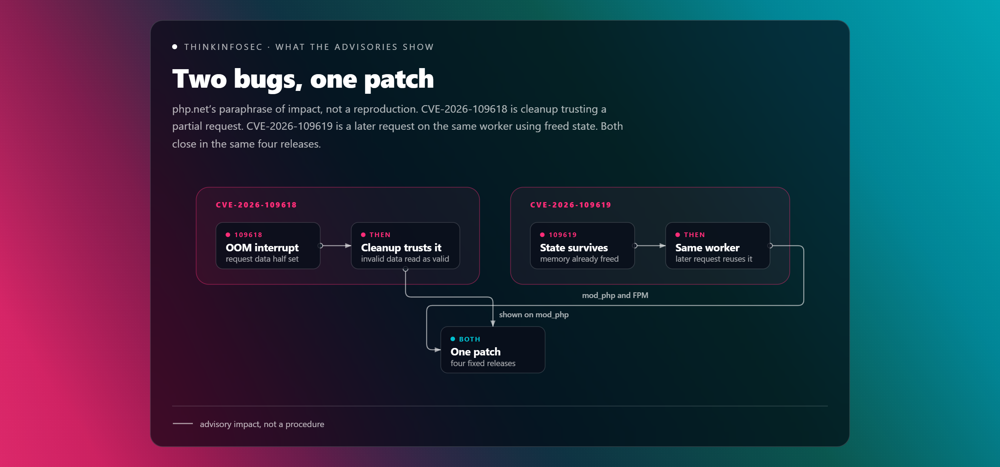
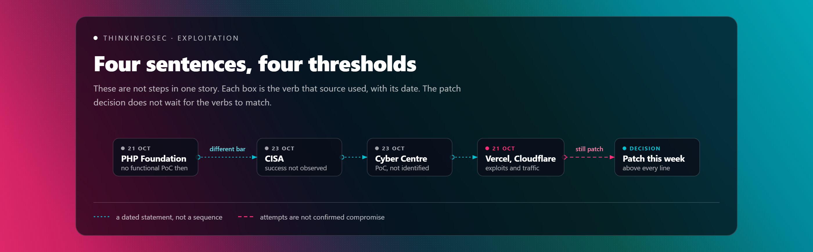
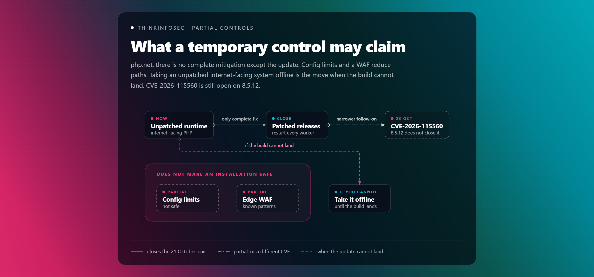
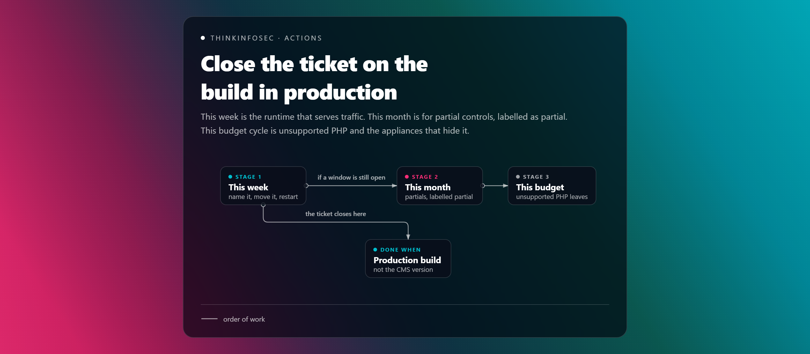
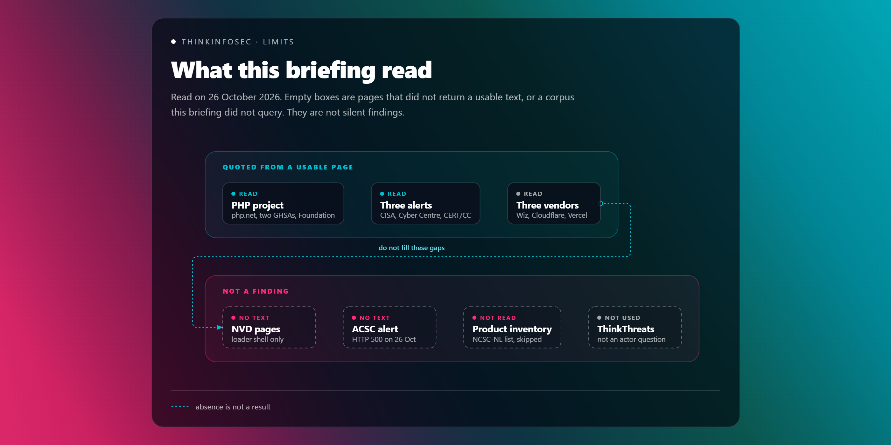

WordPress, Drupal, Joomla, and a one-file script share the bug when they share a vulnerable PHP. The demos were representative. The flaw is underneath them.
The argument
The inventory that closes this is the PHP process
PHP2Shell is a pair of engine bugs. The CMS version is the wrong line on the ticket. Update the runtime that answers the request, restart the workers, and treat every other control as partial until that is done.

The project scored both issues 9.2, with high attack complexity. A leak the day before said 10.0. High complexity is already inside the 9.2. It is not a reason to wait out the week.
CISA has not seen successful exploitation. Vendors have seen public exploits and attack traffic. Those sentences can all be true. The patch decision sits above all of them.
Disclosure
The patch window opened under a leak
The useful clock is not “PHP patched on 21 October.” It is how little quiet time operators had between a public CVE number and a build they could install. Times below are as the PHP Foundation and the vendors stated them.

| When (UTC) | What changed | Source |
|---|---|---|
| 2024 | Quarkslab’s OSTIF audit. A core developer saw early signs of the out-of-memory problem behind CVE-2026-109618. A fix stalled on compatibility, denial-of-service, and extension trade-offs. The Foundation calls that delay a structural failure. | PHP Foundation |
| 11 Aug 2026 | Calif’s Ryan A reports unconditional remote code execution on the same root cause. OpenAI reports it independently. Wiz’s own clock starts 19 August, with a report to PHP on 24 August and an acknowledgement on 21 September. | PHP Foundation · Wiz |
| 20 Oct, ~15:00 | Both CVE IDs circulate with a wrong release time and a CVSS of 10.0. No technical detail in that leak. Pre-announcement moves to 19:30 UTC. The release moves from 22 October 14:00 UTC to 21 October 14:00 UTC. | PHP Foundation |
| 20 Oct, evening | Calif publishes a proof-of-concept video, then deletes it. Copies circulate. The Foundation says the video sped up other proof-of-concept work, and that the security team had not identified a functional exploit in those copies at the moment of public release. | PHP Foundation |
| 21 Oct, 03:02 | Cloudflare states that free and paid WAF rules were already protecting customers, before the public release. | Cloudflare |
| 21 Oct, 07:41 | Chainguard publishes images containing the fix, more than six hours before the coordinated release. The Foundation treats that as an embargo break: the fix was studyable while most users were still waiting. | PHP Foundation |
| 21 Oct, 14:00 | Public disclosure. PHP 8.5.12, 8.4.27, 8.3.36, and 8.2.35. CISA and the Canadian Cyber Centre publish the same day. CERT/CC’s note is dated 22 October. CISA, Cyber Centre, and PHP’s informational follow-on are updated 23 October. | php.net · CISA · Cyber Centre · CERT/CC |
14:00 UTC on 21 October is 01:00 on 22 October in Australian eastern daylight time, and 03:00 on 22 October in New Zealand daylight time. A local headline dated the 22nd can be the same release. It can also be the original plan, which was 22 October 14:00 UTC. Read the zone before you brief the clock.
How to read the sources
What they agree on, and what they do not
php.net, both GitHub advisories, the PHP Foundation, CISA, CERT/CC, the Canadian Cyber Centre, Wiz, Cloudflare, and Vercel. Statistics and status lines below are flagged as established consensus or single-source. They do not average together.

01
Established consensus
Both issues allow unauthenticated remote code execution in PHP itself, across installations that serve web requests. The project’s fixed releases are 8.5.12, 8.4.27, 8.3.36, and 8.2.35. Updating is the only complete fix. mod_php is the highest-risk server API, because a demonstrated path runs before application code.
php.net · GHSA-w8hw-w9fx-j79w · GHSA-6wmf-4rv5-p3rp · CISA · CERT/CC VU#763488 · Cyber Centre AL26-026
02
Established consensus
The published score is CVSS v4.0 9.2 on both advisories. The vector is network, high complexity, attack requirements present, no privileges, no user interaction, high impact on the vulnerable system. The 10.0 figure that travelled with the leaked CVE IDs was wrong.
GHSA-w8hw-w9fx-j79w · GHSA-6wmf-4rv5-p3rp · PHP Foundation · vector CVSS:4.0/AV:N/AC:H/AT:P/PR:N/UI:N/VC:H/VI:H/VA:H/SC:N/SI:N/SA:N
03
Single-source · Wiz, echoed by Cloudflare
Wiz says PHP powers 70% of websites, then titles the same figure as 70% of the internet. Cloudflare says almost 70% of websites. That is an industry estimate of language share. It is not a count of vulnerable hosts, internet-facing workers, or patched estates. Wiz also says every PHP release of the last decade, back to 5.4, is affected by at least one issue. Vercel says 5.4 and later in default configurations. The PHP project’s own fix list is the four supported branches above.
Wiz · Cloudflare · Vercel · php.net
04
Not one status line
As of the 23 October updates, CISA had not observed successful exploitation in the wild. The Cyber Centre had seen open-source reporting of a proof of concept and had not identified active exploitation. Vercel says working public exploits exist and that exploitation attempts have been reported across the industry. Cloudflare says it saw attack traffic mutating payloads against the WAF. Same week. Different thresholds.
CISA, revised 23 Oct 2026 · Cyber Centre, Update 1 · Vercel · Cloudflare
05
Split · do not merge these sentences
On CVE-2026-109618, the GitHub advisory says source analysis supports PHP-FPM as susceptible and that no complete FPM exploit was demonstrated for that server API. The Foundation’s same-day post says remote code execution was also confirmed on PHP-FPM through application-level paths. On CVE-2026-109619, the GitHub advisory is direct: session-lifecycle code execution was validated on mod_php and on FPM. Patch FPM on either reading.
Theme 1
Application updates leave the engine where it was
php.net’s risk line is the deployment, not the product name: PHP-FPM, Apache with mod_php, php-cgi, FrankenPHP, and LiteSpeed, with the highest risk on mod_php.1 CISA adds the operational fact that makes inventories fail. PHP is often a component of other software, and the install is not always obvious.7 The Cyber Centre asks for the same pass over third-party products, appliances, and containers.8
Wiz demonstrated code execution on then-current WordPress, Drupal, and Joomla container images, and says the same engine issue can reach a “Hello World” application.5 Vercel and Cloudflare both say an application or plugin update does not fix it. If a host runs PHP for you, the question to them is which runtime build is serving traffic.106

What each server API claim actually covers
| Server API | What the advisories support | Where the claim stops |
|---|---|---|
| mod_php | Highest risk. Shutdown still runs when startup fails, so the out-of-memory bug can fire before application code. Both CVEs have confirmed code execution here. | Confirmed for the tested builds. Reliability still depends on build, extensions, frontend, and allocator layout.123 |
| PHP-FPM | In scope for the patch. CVE-2026-109619 session-lifecycle code execution was validated on FPM. A child that dies on startup failure removes one early path on CVE-2026-109618. | The 109618 GitHub advisory does not claim a complete FPM exploit. The Foundation post does claim application-level FPM code execution. See finding 05.234 |
| FrankenPHP | Named in the php.net risk list. The 109618 advisory’s source reading treats it as likely susceptible in the same way as mod_php. | That is source analysis, not a published end-to-end demonstration in the advisory.12 |
| LiteSpeed / LSAPI | Named in the php.net risk list. The 109618 advisory says LSAPI behaves more like FPM. | Application-specific exploitation is described as likely and unvalidated.12 |
Supported branches stop at 8.2. PHP 8.1 and older get no further releases from the project. Distributions and long-term-support vendors may ship backports. The security team also published minimal source backports for 7.4, 8.0, and 8.1 for people building from source.1 A PHP 8.6.0 release candidate shipped on 21 October with the same fixes. php.net says that build is for testing, not production.1
Triage shorthand that says “PHP RCE” is not specific enough. These two identifiers are CVE-2026-109618 and CVE-2026-109619. They are not the 2012 PHP-CGI query-string issue, CVE-2012-1823. File the ticket on the 2026 pair.
Theme 2
Two bugs, one patch, different proof
This is the project’s own paraphrase. It is enough to scope a patch and a hunt. The GitHub advisories and the Wiz post go further into how a request reaches the failure. That detail is not repeated here.

CVE-2026-109618 — out-of-memory corruption
Out-of-memory handling can interrupt PHP while internal request data is only partly initialised. Cleanup may then treat that data as valid.1 The confirmed impact on the advisory is unauthenticated code execution as the web worker. Wiz also groups a remote memory-disclosure bug under this CVE, and its code-execution demos on the three CMSs.25
CVE-2026-109619 — stale global state
A worker can keep a reference to request-owned state after that memory is freed. A later request on the same worker can use the stale state before normal initialisation.1 Confirmed consumers in the advisory include early configuration diagnostics and session upload progress. On PHP 8.5, fatal-error backtraces are the strongest demonstrated mod_php case. Session-lifecycle code execution was validated on mod_php and FPM.3
Wiz’s account of why this surfaced in 2026 is a commercial narrative as well as a research note: frontier models made a decade-old memory bug practical to turn into an exploit, and Wiz names its own research stack in that story.5 The PHP Foundation’s account is the other half. The out-of-memory class was seen in 2024, without a concrete code-execution path, and the fix waited on trade-offs and a small team.4 Read them as two clocks on the same bug. One is “AI lowered the cost of the exploit.” One is “the project already knew the class and did not ship the fix.” Neither clock moves the remediation.
Theme 3
Four statements, four thresholds
A board paper that picks one of these sentences and drops the date will be wrong by the end of the paragraph. Keep the verb each organisation actually used.

| Who | As of | The sentence they support |
|---|---|---|
| PHP Foundation | Public release, 21 Oct | PoCs were circulating after the deleted video. The security team had not identified a functional exploit in them at disclosure.4 |
| CISA | Alert revised 23 Oct | Has not observed successful exploitation in the wild. Still says patch immediately.7 |
| Cyber Centre | Update 1, 23 Oct | Open-source reporting of a proof of concept. No active exploitation identified at that time. That can change quickly.8 |
| Vercel | Bulletin, undated beyond the 21 Oct disclosure | Working public exploits are available. Exploitation attempts reported across the industry.10 |
| Cloudflare | 21 Oct post, with a 23 Oct update | Observed attack traffic, including payloads changing to get past the WAF.6 |
“No successful exploitation observed” and “attack traffic against a WAF” answer different questions. One is confirmed compromise. One is attempts. Hunt as if attempts are already on the wire from 20 October, when the CVE IDs leaked. Patch as if the attempts do not need to succeed in public before the control is late.
Theme 4
What a temporary control is allowed to claim
The release notes are flat. “There are no complete mitigations, updating is the only safe choice.”1 php.net then lists measures that reduce specific paths and “do not make an installation safe.” CISA’s version of the same idea: a web application firewall may provide some protection until the update, and systems that cannot be updated — especially PHP 8.1 and earlier — should be taken offline until they can.7 The Cyber Centre says to isolate internet-facing applications from public networks where immediate remediation is not feasible.8

Configuration, if the patch is not on yet
- For CVE-2026-109618, set
memory_limit=-1where the application cannot put a finite limit back. An underlying allocation failure can still hit the vulnerable path. Do not useRLIMIT_ASorRLIMIT_DATAas the substitute. Restart workers.1 - Keep
post_max_sizelow — 8M without uploads, 32M with them — and keepupload_max_filesizeunder it. Enforce size, field, part, header, and nesting limits at the proxy, including requests with no usableContent-Length.1 - For CVE-2026-109619, set
session.upload_progress.enabled=0inphp.ini, the FPM pool, or server config that applies before request parsing.ini_setand.user.iniare the wrong place. On PHP 8.5, also setfatal_error_backtraces=0. Hiding warnings witherror_reporting,display_errors, or@does not close this bug.13
Edge controls, after the leak
- Cloudflare says free and paid managed rules were on from 03:02 UTC on 21 October, using a new full-transaction check that looks at the response as well as the request. Customers are still told to patch.6
- Vercel deployed WAF rules before disclosure, for PHP on Vercel and for proxied PHP origins. Requests that reach the origin directly are outside that control.10
- Wiz names a wider set of providers that prepared customer guidance, including AWS, Akamai, Fastly, Google, Imperva, Microsoft, and Automattic. That list is Wiz’s account of coordination. It is not a coverage statement for your tenant.5
What to look for while the estate is still mixed
CISA: PHP worker processes launching shells or downloading tools. It also published a SIGMA rule with the 23 October update, and said that rule may change.7 The Cyber Centre: unexpected processes, commands, files, accounts, or outbound connections tied to PHP or the web server.8 Wiz, until the patch is on: unusual multipart requests followed by memory-limit errors or repeated HTTP 500s, unexpectedly large or malformed PHPSESSID cookies, and unexplained worker churn.5 Those are investigation signals. They are not proof of compromise, and they are not a substitute for the update.
The adjacent identifier
On 23 October PHP published an informational note for CVE-2026-115560, in session upload progress. The 21 October releases do not fix it. The condition is uncommon: the serialize handler is set to php_binary or php_serialize in configuration, then switched to php at runtime before session_start(), with upload progress still enabled. Applications that never change that handler at runtime are outside this path. The suggested setting is the same session.upload_progress.enabled=0 already listed for CVE-2026-109619. A full advisory is promised with the next regular release.1 The Cyber Centre’s Update 1 matches that scope.8 Cloudflare’s 23 October note says the issue affects fully patched releases, including 8.5.12, and that its existing rule covers the default upload-progress field name. A site that changed session.upload_progress.name is outside that rule.6
Do not file CVE-2026-115560 as PHP2Shell. It is a narrower follow-on, with a configuration most applications do not use. It does change one sentence: “we are on 8.5.12” is the close for the 21 October pair, and it is not the close for this session path.
What to do
Actions while the builds are still new

Name the runtime and move it
- Inventory every PHP that serves a web request, including appliances, containers, and products that embed it.78
- Move internet-facing 8.2 through 8.5 to 8.2.35, 8.3.36, 8.4.27, or 8.5.12, or to the distro package that contains those fixes. Restart every worker.1
- If you cannot patch, take the internet-facing system offline, especially on 8.1 and earlier.7 Isolating it from public networks is the Cyber Centre’s version of the same move.8
- Close the ticket on the runtime build in production. A CMS or plugin update leaves the engine where it was.106
Hold the partial controls honestly
- Where a change window is still open, apply the php.net settings above and label them as exposure reduction. Confirm nothing puts a finite
memory_limitback.1 - Leave
session.upload_progress.enabled=0in place through the CVE-2026-115560 follow-on, unless you have confirmed the uncommon handler path and accepted what remains.1 - Turn on the WAF rules your edge already has, in block mode. Then check for origins that are reachable around that edge.610
- Hunt from 20 October, the leak, not only from 14:00 UTC on the 21st. Use the CISA, Cyber Centre, and Wiz signals as leads.475
Get unsupported PHP off the estate
What would change this advice. A later PHP release that withdraws 8.5.12, 8.4.27, 8.3.36, or 8.2.35 as the fix for this pair. CVE-2026-115560 does not do that — it is a separate session path the 21 October builds do not close. A CISA or ACSC confirmation of successful exploitation would raise the hunt. It would not relax the patch. A measured patch-adoption figure would change the residual-risk sentence. None of the sources read here has one. If the GitHub advisory and the Foundation post are later aligned on FPM for CVE-2026-109618, drop finding 05 and keep the instruction to patch FPM.
Limits
What this briefing did and did not read

Collection window
Pages were read on 26 October 2026. The PHP advisory and release notes are the 21 October publications, including the 23 October informational note on the same archive page. CISA’s alert was last revised 23 October. CERT/CC VU#763488 is dated 22 October. The Cyber Centre alert is Update 1, 23 October. Cloudflare’s post includes a 23 October update. Wiz and Vercel are the disclosure write-ups. Nothing here is a claim about exploitation after those dates.
Pages that did not return a usable read
Both NVD detail pages returned a loader shell only. No NVD wording is quoted, and those URLs are omitted. CISA lists partner alerts from NSA, NCSC-UK, ASD’s ACSC, NCSC-NL, and NCSC-NZ. Those full texts were not read. A direct request for the ACSC alert returned HTTP 500, so this briefing does not quote ACSC sentences and does not link that URL. CERT/CC and the Cyber Centre point at an NCSC-NL inventory of products that embed PHP. That list was not read. No product catalogue is claimed here.
Vendor incentive and the 70% figure
Wiz, Cloudflare, and Vercel sell controls that sit in front of or beside this bug. Their patch advice matches the PHP project. Their footprint and “AI inflection” framing is theirs. The 70% line is cited as an estimate of PHP’s share of websites. It is not a ThinkInfoSec measurement, and it is not a statement that 70% of sites are exploitable today. No victim count, exploit-reliability rate, or patch-adoption percentage appears in the sources read. None is estimated here.
What was left out on purpose
The GitHub advisories describe request patterns that reach the memory failure, and the Wiz post describes how those bugs were turned into code execution. This briefing does not repeat exploit steps, payloads, or reproduction procedures. Operators who need that detail should read the advisories. The ThinkThreats corpus was not queried. This is a runtime advisory, not a question of which actor or country a 2026 report named.
Bibliography
Sources
Accessed 26 October 2026. Official advisory first. Vendor posts are labelled.
PHP project
- [1] The PHP Group, security advisory “Critical remote code execution vulnerabilities, update now,” release notes for 8.5.12, 8.4.27, 8.3.36 and 8.2.35, and the 23 October informational note on CVE-2026-115560. PHP News Archive — 2026.
- [2] PHP, GHSA-w8hw-w9fx-j79w — RCE via OOM corruption (CVE-2026-109618). Published 21 October 2026. CVSS v4.0 9.2.
- [3] PHP, GHSA-6wmf-4rv5-p3rp — RCE via stale global state (CVE-2026-109619). Published 21 October 2026. CVSS v4.0 9.2.
- [4] The PHP Foundation, “Today’s PHP Security Release, and How We’re Strengthening PHP Security.” 21 October 2026. Discovery history, the 10.0 leak, the moved release, the Calif video, and the Chainguard embargo break.
National advisories
- [7] CISA, “Critical Vulnerabilities in PHP Require Immediate Patching.” Published 21 October 2026, last revised 23 October 2026. Includes the SIGMA-rule update and the partner list.
- [8] Canadian Centre for Cyber Security, AL26-026 — Critical vulnerabilities impacting PHP, Update 1. 21 October 2026, updated 23 October 2026.
- [9] CERT/CC, VU#763488 — Memory corruption vulnerabilities in PHP. Original release 22 October 2026.
Researcher and vendor bulletins
- [5] Wiz Research, “PHP2Shell: AI uncovers critical RCE vulnerabilities affecting 70% of the Internet.” 21 October 2026. Researcher write-up. The 70% figure and the CMS demos are this source. Wiz sells cloud security products.
- [6] Cloudflare, “Cloudflare deploys protections against php2shell vulnerability.” 21 October 2026, with a 23 October update on CVE-2026-115560. Vendor bulletin.
- [10] Vercel Security, “PHP security advisory: php2shell (CVE-2026-109618, CVE-2026-109619).” Vendor bulletin. States working public exploits and industry exploitation attempts.